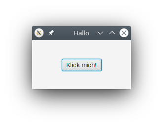

Prof. Dr.-Ing. Johannes Schildgen
johannes.schildgen@oth-regensburg.de
Programmieren 2 (Java)
Kapitel 6: JavaFX
2020-05-20


Bibliotheken
Fremdbibliotheken (jar-Archive) zum Java-Classpath hinzufügen:
$ javac -cp json-simple-1.1.1.jar MeinProgramm.java
$ java -cp json-simple-1.1.1.jar:. MeinProgramm
Hallo!
In IntelliJ:
File → Project Structure → Libraries → +,
dann einzelne JARs hinzufügen
oder ganze Ordner mit JARs.
Beispiel: json-simple
Bibliothek zum Erstellen und Verarbeiten von JSON-Dokumenten
http://code.google.com/p/json-simple/
Hätte man json-simple-1.1.1.jar nicht zum Classpath hinzugefügt, würde ... nicht funktionieren?
- import org.json.simple.JSONObject;
- new JSONParser();
- parser.parse(json)
- Eine ParseException würde auftreten
https://frage.space
GUI-Programmierung in Java
- GUI: Graphical User Interface
- Java-Frameworks zur Entwicklung plattformübergreifender GUIs:
- AWT (Abstract Window Toolkit) - Java 1 (1995)
- Swing - Java 1.2 (1998)
- SWT (Standard Widget Toolkit) - Eclipse (2001)
- JavaFX (2008) - aktuelle Version: JavaFX 14 (2020)
JavaFX in IntelliJ
In Java 7 bis 10 war JavaFX enthalten;
nun muss es separat installiert werden.
https://gluonhq.com/products/javafx/
In IntelliJ:
- SDK herunterladen und entpacken
- Plugin JavaFX installieren
(File → Settings → Plugins) - JavaFX-Projekt anlegen
(File → New → Project → JavaFX) - JavaFX-Bibliothek hinzufügen
(File → Project Structure → Libraries → + → javafx-sdk-11.0.2/lib) - Run → Edit Configurations → VM options:
-p D:\javafx-sdk-11.0.2\lib --add-modules javafx.controls,javafx.fxml
JavaFX-Application
"Button" wird in IntelliJ rot dargestellt, wie lösen wir das?
- Klasse Button erstellen
- import java.awt.Button;
- import javafx.scene.control.Button;
- Da kann man nichts machen.
https://frage.space
Scene Graph
Baumstruktur, die den Fensterinhalt festlegt
Stage- Fenster; Wurzel des Scene Graphs
- Fenstertitel:
primaryStage.setTitle("Hallo"); - Fenstergröße:
primaryStage.setScene(
new Scene(pane, 200, 100)); - Sichtbar machen:
primaryStage.show();
Pane- Anordnung der Elemente
StackPane(alle Elemente hintereinander)VBox,HBox,BorderPane,GridPane,FlowPane, ...
Wofür könnte VBox und HBox stehen?
- Virtuell und Hardware
- Visuell und Haptisch
- Visible und Hidden
- Vertikal und Horizontal
https://frage.space
- Steuerelemente
- ,
Label,RadioButton,Checkbox, , ...
- ,
VBox / HBox
Elemente werden untereinander (VBox) bzw. nebeneinander (HBox) angeordnet.
Zeichnen Sie den Scene Graph (beginnend mit der Wurzel "Stage"). Wie viele Knoten hat er?
- 6
- 7
- 8
- 9
https://frage.space
Listener-Konzept
Listener-Methode wird aufgerufen, sobald ein gewisses Ereignis eintritt,
z. B. wenn ein Button geklickt wird:
oder wenn eine Eingabe in einem Textfeld erfolgt:
FXML
Listener in FXML
Controller-Klasse
MVC
Model-View-Controller-Konzept: Trennung von Datenmodell (Model), Präsentation (View) und Programmsteuerung (Controller)
Model
Klassen, die die in der Anwendung verwalteten Daten repräsentieren:Person, Witz, BlogBeitrag, Musikstueck, Notiz, Produkt,...
View
Präsentation der Daten des Modells und festlegung der Benutzerinteraktion:
Layout gestalten mit Panes, Textfeldern, Buttons, Labels, ... (z. B. in FXML)
Controller
Wertet Änderung in der Präsentation (z. B. Textfeld-Eingabe) aus, und nimmt Änderung an der Präsentation und den Daten im Modell vor.
Beispiel: Notiz-Anwendung
- Model: Klasse
Notiz(titel,text, Konstruktor, Getter, Setter) - View:
notizen.fxml - Controller: Klasse
NotizenController
Notizen.java
Notiz.java
notizen.fxml
NotizenController.java (1/2)
NotizenController.java (2/2)
Zusammenfassung
- Bibliotheken als JARs importieren;
java -cp - JavaFX:
Application - Scene Graph: Stage, Pane, Steuerelemente
- FXML
- Listener-Konzept:
setOnAction - Controller-Klasse
- MVC-Konzept